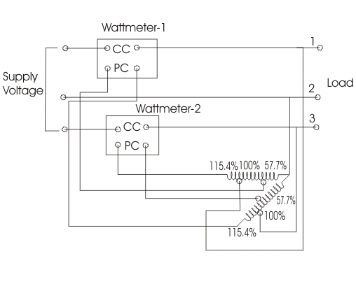
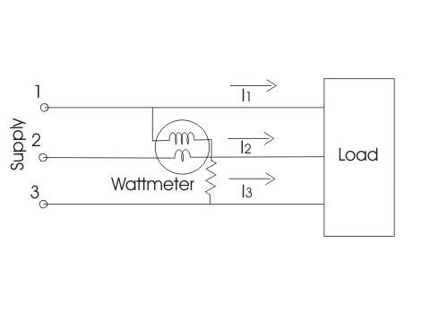

The instruments which measures the reactive power of the circuit are called varmeter. What is reactive power? The reactive power in the circuit is given by VIsinA.
Here there is no need to give explanation about the physical meaning of reactive power, only mathematical relation is sufficient. Measurement of reactive power is essential because if the reactive power is more in the circuit then electrical power factor will be poor hence losses will be more. On the basis of power supply the varmeters can be classified as
1. Single phase varmeters
2. Polyphase varmeter.
We are going to discuss both types of varmeters one by one.
Single Phase Varmeter
In this type of varmeter the pressure is made highly inductive such that voltage across the pressure coil lead by the pressure coil electric current by angle of 90°. The coil electric current is the load current which has phase difference of angle of A with supply voltage. The reading of the varmeter is given by
which is mathematically equals to the reactive power of the circuit.
Given below is the circuit diagram of single phase varmeter.
Single Phase Varmeter
Let us make the phasor diagram for the above circuit by taking reference axis as voltage axis. The pressure coil electric current lags voltage by an angle of 90° which is clearly shown in the phasor diagram.

Now there are some demerits of using this varmeter as it do not measure reactive power correctly when harmonics are present.
Polyphase Varmeter
The two auto-transformer are used to create the phase shifting (which is necessary for the measurement of reactive power), when connected in open delta configuration. Current coils of both the wattmeter are connected in series with supply line 1 and 3. While pressure coils are connected in parallel as shown in the diagram given below-

Both the auto-transformers can produce maximum of 115.4% of the line voltage as marked in the diagram. Tapping on both the transformers are given at 57.7%, 100% and 115.4%. One of the end of the pressure coil of wattmeter (marked as one) is connected to 115.4% of tapping of auto-transformer-2 while other end is connected to 57.7% tapping of auto-transformer-1. Due to this connection voltage produces across the pressure coil of wattmeter one is equal to line voltage but shifted by an angle of 90°. The power shown by wattmeter thus equal to reactive power. Similarly the pressure coil of wattmeter 2 is connected showing same voltage equal to line voltage but differ in phase and this difference in phase is equal to again 90°. Now the arithmetic sum of both readings of the wattmeters is equal to total reactive power of circuit.
Note that reactive power in three phase balanced circuit can be measured by single wattmeter method. This circuit diagram is shown below-

The electric current coil is connected in series with line 2 as shown in the diagram. The pressure coil is connected between the line 1 and line 2. The reading of the wattmeter will measure the reactive power.
 by
by